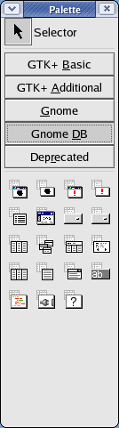
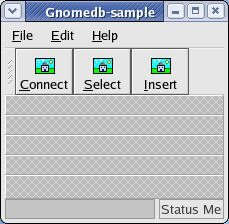
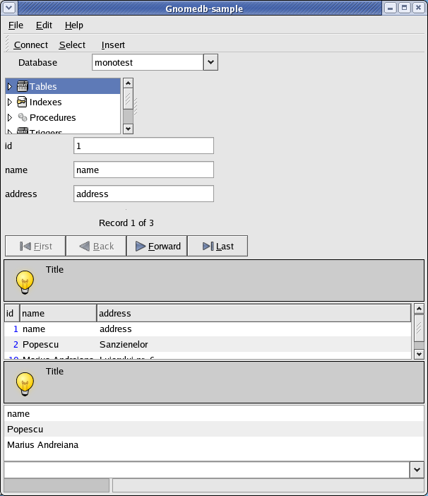

Contents
GnomeDb offers database support for your desktop applications:
functions for running SQL and working with result sets, data-bound widgets, XML queries and a report engine.
Glade offers support for GnomeDb widgets if it was compiled with GnomeDb libraries installed. In project options, check the box "Enable Gnome DB support".
The Glade palette with GnomeDb widgets is shown here. The tooltips reveal widget names.
As of december 2003, there are some problems with GnomeDb and Mono:
- the current API is not documented. You can use the C API and Gtk# source to learn about it, and then please contribute some parts of the Mono API documentation.
- libGlade doesn't have support for GnomeDb (see bug). We'll use Glade to make our UI, but we'll pack manually the GnomeDb widgets.
- there are no Mono bindings for Gda Reports. This bug has a patch, but it's not working properly. Anyway, there is an alternative solution: you can get the query results as XML and use XSL to make plain text, HTML or PDF
(with XSL Formatting Objects and FOP). I prefer XSL FO as it's a standard.
- various bugs. Not everything works as it should. You'll see notes in this tutorial about it. Help is welcomed.
Overall though, GnomeDb is the solution for desktop database applications. You can also help making it better with API docs, bug fixes and new functionality.
Version 1.2, scheduled for march 2004, will offer updatable data models, which will allow applications to modify data on the underlying data source without using any SQL at all, and user-defined forms for data displaying/modification.
|
|
 |
Let's see a sample application using PostgreSQL. First, create a database with this table:
CREATE TABLE customers (
customer_id INT4 NOT NULL,
name VARCHAR(256) NOT NULL,
address VARCHAR(256) NOT NULL
);
CREATE UNIQUE INDEX customers_id_idx ON customers USING btree (customer_id);
| Then, make a Gnome project in Glade. We'll have clicked signals connected to the toolbar buttons.
This the the .glade file, .gladep and you can see a screenshot of it.
|
|
 |
Here is the code and Makefile.
And screenshot of our application at run-time:

It's a little crowded, but it shows many important widgets. Let's learn more about them.
In GnomeDbSample() the GnomeDb widgets are packed manually and the connection to database is initialized:
client = new Gda.Client ();
dbc = client.OpenConnection ("monotest", "mono", "mono",
Gda.ConnectionOptions.ReadOnly);
The paramenters to OpenConnection() are libGda DSN (data source name), username and password and connection options.
We can also connect to another database by pressing "Connect", which opens a dialog to define the connection.
GnomeDb.LoginDialog dialog;
dialog = new GnomeDb.LoginDialog( "Select data source" );
if (dialog.Run() == true) {
dbc = client.OpenConnection( dialog.Dsn, dialog.Username, dialog.Password,
Gda.ConnectionOptions.ReadOnly );
if (dbc != null) {
db_browser.Connection = dbc;
}
}
dialog.Destroy();
The GnomeDb.Grid widget is one of the most useful. Is shows the result, allows ordering and exporting as tab-delimited, comma-delimited or XML formats.
Current problems with it: sorting doesn't work on integer columns (sorts them as characters), RowSelected event works only for the first row, getting the list of selected rows doesn't work.
This is the code:
/* row selected event */
db_grid.RowSelected += on_row_selected;
...
public static void on_row_selected( System.Object obj, GnomeDbSharp.RowSelectedArgs args )
{
Console.WriteLine( "row selected" );
}
/* list selected rows */
GLib.List row_list;
row_list = db_grid.Selection;
Console.WriteLine( "Record count: " + row_list.Count );
foreach( int i in row_list ) {
//crash here
}
GnomeDb.List is the same, but it shows only one column of data. GnomeDb.Combo is a combo with data from a table column (note: you'll have to use CVS version of libgnomedb for this to work)
This tutorial will grow as the author learns more and GnomeDb gets better.